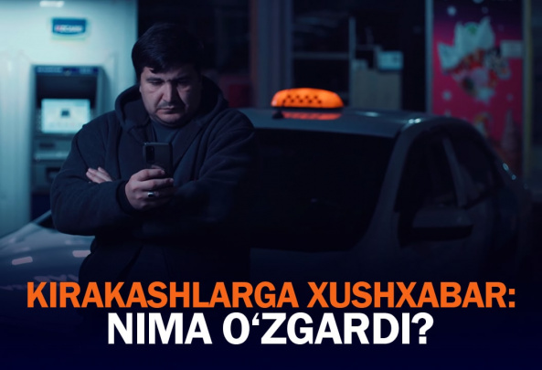

Taksichilar uchun xushhabar:
Kirakashlik o'z-o'zini band qiluvchi
kasblar ro'yxatiga qo'shiladi
1 sentabrdan e'tiboran jismoniy shaxslar o'zini-o'zi band qilgan
kirakash sifatida ro'yxatdan o'tib, yengil avtomobilda qonuniy
ravishda yo'lovchi tashishi mumkin bo'ladi.
"Bizda ularga qarshi qurol ishlatishga
ruxsat yo'q edi"- Nukusda yaralangan
harbiylar
Nukus voqealari: Namoyishchilar
Tajimuratovni Qoraqalpog'iston rahbari
deb e'lon qilmoqchi bo'lgan
Munozarali 17-bob va vazifasini
professional bajarolmagan
Konstitutsiyaviy komissiya - Kamoliddin
Rabbimov bilan suhbat
Zaynilobiddin Nizomiddinov Prezident
administratsiyasi rahbarligidan ketdi
Muharrir tanlovi
Yarador askarlar, yongan texnikalar va
blokpostlar. Namoyishchilardan keyingi
Nukus Ko'chalaridan fotogalereya
Konstitutsiyaga taklif etilayotgan
o'zarishlar ro'yxati
Prezient Konstitutsiya bo'yicha o'z
takliflarini berdi (ro'yxat)
Dolzarb xabarlar
Donetsk oblastida ko'p qavatli uyga zarba berildi. Kamida 15
kishi halok bo'lgan
Shanba kuni kechqurun rossiyalik harbiylar Donetsk oblastidagi Chasiv Yar shahrini o'qqa
tutishdi. Raketalar turar joy binosiga kelib tushgan. Ukraina favqulodda holatlar bo'yicha davlat
xizmati ma'lumotiga ko'ra, 15 kishi halok bo'lgan, yana 24 kishi xarobalar ostida qolib ketgan
bo'lishi mumkin.
Shri-Lankada misli ko'rilmagan
namoyishlar, prezident qarorgohiga
bostirib kirildi. Asossiy ma'lumotlar

Taksichilar uzoq kutgan yangilik:
Nimalar o'zgardi?
Boris Jonsonning o'rniga kim keladi?
Ehtimoliy nomzodlar ro'yxati
Sindzo Abe suiqasddan vafot etdi. U
Yaponiyaga eng uzoq vaqt rahbarlik
qilgandi
Intervyu
Imtihonlar sanasi, tartibi va
boshqalar: Sardor Rajabov bilan
suhbat
Hayit kunlarida qurbonlik
so'yish kimlar uchun vojib?
Qurbonlikka oid hukmlar
“Eksport oshishi uchun agro-
kooperativlar kerak” -
Yorqinjon Malikov bilan suhbat

Munozarali 17-bob va vazifasini
professional bajarolmagan
Konstitutsiyaviy komissiya -
Kamoliddin Rabbimov bilan suhbat
Kun.uz surishtiruvi

Yengilmas byurokratiya: OTMlarda bitiruvchilardan
“obxodnoy” to'ldirish talab qilinmoqda

Qo'rg'ontepada odamlar fast-fuddan zaharlandi.
Shifoxonadan reportaj
Uning “tanka”si bormi? Navoiy ko'chasida
noqonuniy qurilish bo'lyapti
Andijonda qotil ayol ikki norasidani nega
o'ldirgandi?
Toshkent shahar hokimligi «Eskalator»dan 20
yildan beri qarz. Rossiya kompaniyasining «sabri
tugamoqda»
Maqolalar

Yerlarimiz shiddat bilan ishdan chiqyapti, chunki...
tayinli egasi yo'q
Agar yer singari ishlab chiqarish vositalari xususiy qo'llarda
bo'lmasa, katta ehtimol bilan ular samarasiz ishlatiladi. Yerga
xususiy egalik qilish huquqi nafaqat agrar davlatning rivoji
uchun, balki butun boshli xalqning irsiy fondini saqlab qolish
uchun ham kerak. Bu haqda Kun.uz kolumnisti Shahzod
Yo'ldoshboyev fikr yuritadi.
Axborot kurashi avjida. TikTok ochilishi va unda
milliy tashviqot olib borilishi kerak
Vikipediyani to'ldirishning o'zi bilangina maqsadga
erishilmaydi.
YeOIIga kirish yanada xavfli bo'lib qoldi, JSTga
a'zolikni tezlashtirish kerak - iqtisodchilar
Yevrosiyo iqtisodiy ittifoqiga qo'shilsak, tashqi savdo
siyosatidagi mustaqilligimizni yo'qotamiz, deydi iqtisodchi
Mirkomil Xolboyev. Yana bir iqtisodchi Valijon To'raqulovning
fikricha, hozirgi noaniq vaziyatda imkoni boricha YeOIIga a'zo
bo'lmay turilgani ma'qul; biz uchun ustuvor vazifa Jahon
savdo tashkilotiga kirish bo'lishi kerak.
«Provokatorlar ichkaridan turib odamlarni
boshqarishdi» - ikki kunlik tartibsizliklardan keyingi Nukus
1 iyul kuni Qoraqalpog'istonda boshlangan namoyishlar
ommaviy tartibsizliklarga aylanib ketdi..
Ura deganga qo'shilib ketaverish qahramonlik emas
Qoraqalpog'istonda sodir bo'lgan voqealar barchani birdek
qayg'uga soldi.
Qaltis paytdagi qat'iy va to'g'ri qadam
Konstitutsiya loyihasi e'lon qilinib, muhokamalar davom
etarkan, rasmiylar aholi fikrini eshitishga tayyorligini aytib
keldi. Bunday vaziyatda prezident oqilona va pragmatik yo'l tutdi..